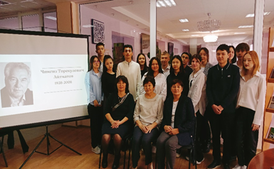
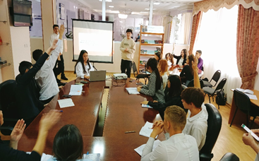
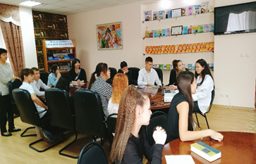
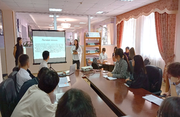

В библиотеке колледжа «Туран», в рамках проекта «Читающий колледж» был проведен тематический вечер со студентами группы АК-2, ПОК-2 «Книга-неисчерпаемое духовное сокровище». На мероприятии говорили об истории создания книги, о важной роли книги в жизни человека. Целью данного мероприятия было повысить интерес к книгам и привлечение студентов к посещению библиотеки. Студенты активно делились своими мнениями о книге, говорили о своих любимых книгах. Студенты пришли к единому мнению, что «книга-самый спокойный учитель, молчаливый товарищ. Только книга учит милосердию, доброте, и признанию истины».
«Тұран» колледжінің кітапханасында «Оқуға құштар колледж» жобасы аясында колледж кітапханашысы Ахметова С. Т., қазақ тілі мен әдебиеті пәнінің оқытушысы Абдирасилова А.К. ұйымдастыруымен, АК-2, ПОК-2 тобының студенттері арасында «Кітап-сарқылмас рухани қазына» атты тақырыптық кеш өтті. Іс-шарада кітаптың шығу-қалыптасу тарихы, адам өміріндегі алатын ролі маңызды екені айтылды. Шараны өткізудегі негізгі мақсат-студенттердің кітапқа деген қызығушылықтарын арттыру және кітапханаға келуге тарту болды. Студенттер белсенді түрде кітап туралы өз ойларын ортаға салып, сүйікті кітаптары жайлы айтты. Шара соңында студенттер «Кітап-ең сабырлы ұстаз, үндемес серік», тек кітап қана қайырымдылыққа, мейірімділікке, ақиқатты тануға үйретеді деген ортақ пікірге келді.
   